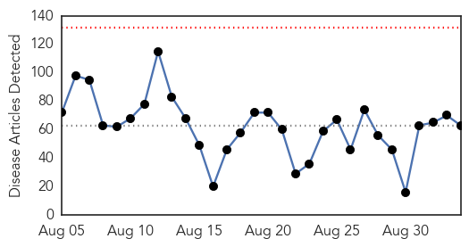
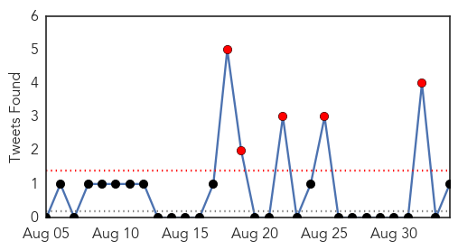
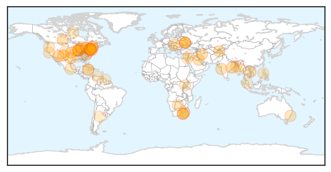
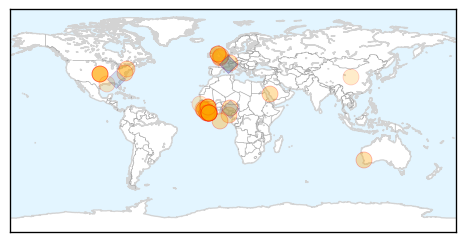

Unknown
30-Day Web Trend
0 alerts, 0 warnings

30-Day Twitter Trend
5 alerts, 0 warnings

Article Locations
Article Confidences
Top Articles:
- 0.981
- Cases of Legionnaires' disease confirmed in N.S and N.B
- 0.979
- Please, no excuses — get your flu vaccine this fall
- 0.975
- No excuses – get your flu vaccine
- 0.973
- State's first case of Eastern Equine Encephalitis reported
- 0.972
- Another Death from Legionnaires' Disease in Illinois
- 0.953
- WHO: Ukraine outbreak brings polio back to Europe
- 0.952
- Rabies found in bats north of Saskatoon, humans exposed in one case
- 0.950
- 8 now dead from Legionnaires' disease in western Illinois
- 0.926
- Too early for the flu shot?
- 0.917
- Chicago Tribune
- 0.917
- Chicago Tribune
- 0.917
- Chicago Tribune
- 0.904
- Babies die from bacteria in KZN hospital
- 0.900
- Ukraine reports polio outbreak, first cases in Europe since 2010
- 0.895
- KSLA News 12 Shreveport, Louisiana News Weather & Sports
- 0.889
- KZN denies bacteria caused babies’ death - KwaZulu-Natal
- 0.875
- Water-borne illnesses under control — Health Ministry
- 0.866
- U.S. Senator Warner supports Iran nuclear agreement -White House
- 0.864
- Bronx Public Housing Complex Building Tests Positive for Legionella
- 0.859
- Water Borne Illnesses Under Control
- 0.845
- Leptospirosis: Animals screened to find carrier
- 0.822
- Health care experts test for source of Legionnaires' at Illinois Veterans Home
- 0.821
- 7 dead, 45 diagnosed with Legionnaires� disease at Quincy IL veterans� home
- 0.817
- Town official concerned over initial state response to hot tub infections
- 0.811
- Five babies dead at KZN hospital: DA - KwaZulu-Natal
- 0.798
- Polio in Ukraine: what the outbreak means
- 0.788
- Water crisis cripples Marina operations
- 0.748
- Holzman hired as new State Medical Officer at Montana DPHHS - KTVQ.com
- 0.741
- How new technologies are shaking up health care
- 0.739
- Polio outbreak in Ukraine, first cases in Europe since 2010
- 0.729
- The Caledonian-Record
- 0.726
- Workers Uncover Deadly Past in Pennsylvania Coal Town
- 0.713
- Obama Administration considers securing border for FOOD ONLY after reports of feces-covered cilantro emigrating from Mexico
- 0.703
- Finding a Way Forward in the Fight Against Prion Disease
- 0.697
- Norovirus-Like Illness Sickens at Least 125 Students, School Officials Say
- 0.682
- Home Remedy For Yeast Infection Male Discharge
- 0.679
- Nothing to worry over mass hysteria: experts
- 0.676
- San Quentin Prison Officials Still Searching For Source Of Legionnaires’ Outbreak
- 0.675
- Rabid bat bites Creswell man in the neck
- 0.649
- University of Maryland Medicine Tests Novel Treatment for Parkinson's
- 0.648
- Colorado: Pueblo County reports more plague positive fleas
- 0.639
- House OKs comprehensive policy for patients with rare diseases
- 0.632
- Jimmy Carter: I Want the 'Last Guinea Worm to Die Before I Do'
- 0.626
- Norovirus-Like Illness Sickens at Least 125 Students, School Officials Say
- 0.625
- Patients worried about Lyme disease right to push for answers
- 0.617
- Elderly Eighth Person Is The Latest Victim of Legionnaires’
- 0.613
- JAMAICA: Comprehensive reform critical to fixing health sector
- 0.613
- More than 13.000 cancer patients may die in Venezuela for lack of medicines
- 0.604
- Plague found in fleas in western Pueblo County
- 0.603
- Holyoke Medical Center Selects QPID Health For Quality Initiative
Showing top 50 articles...
Top Tweets:
- 0.550
- FluTip: flu season is around the corner & everyone 6 months & older should get a flu vaccine ideally by October. NatlPrep CDCPrep
Ebola
30-Day Web Trend
0 alerts, 0 warnings

30-Day Twitter Trend
0 alerts, 0 warnings

Article Locations
Article Confidences

Top Articles:
- 1.000
- Liberia Declared Ebola-Free Again
- 1.000
- Liberia Ebola Free, Enters 90-Day "Heightened Surveillance Period"
- 1.000
- WHO Declares Liberia Free Of Ebola Virus Transmission
- 1.000
- WHO declares Liberia free of Ebola for second time
- 1.000
- Close the Borders Now!
- 1.000
- Liberians hope to get on with their lives, says health minister, after country declared Ebola-free
- 1.000
- Ebola Virus Disease — Sierra Leone and Guinea, August 2015
- 1.000
- Liberia free of Ebola for second time
- 0.999
- Nurse returns to Kettering General Hospital after helping people with Ebola in Sierra Leone
- 0.999
- Liberia reaches Ebola-free status for 2nd time
- 0.998
- MRU countries recommend information sharing
- 0.998
- WHO Director-General addresses Institute of Medicine Ebola workshop - Sierra Leone
- 0.998
- Liberia declared free of Ebola transmission…Part 2
- 0.997
- Primate Ebola vaccine slowed by US ban on chimp testing
- 0.997
- WHO declares Liberia Ebola-free for second time
- 0.997
- Health Watch: Flu Season
- 0.996
- Virucidal Efficacy of BETADINE(R) Formulations Proven Against MERS[1]
- 0.995
- Ebola transmission in Liberia over. Nation enters 90-day intensive surveillance period
- 0.995
- 'Team Ebola' thanks family members
- 0.990
- 20 Years of Ebola, and How Photography Has Changed
- 0.989
- Thomas Eric Duncan, the Ebola patient in dire shape
- 0.989
- Physicians overestimate ability to assess Ebola, study finds — The Daily Free Press
- 0.987
- WHO using ring vaccine approach against Ebola
- 0.985
- Top U.S. Ebola Fighter Warns Australian Miners In Africa
- 0.984
- Ebola Still Threatens the World
- 0.983
- Is PC a deadly epidemic?
- 0.957
- Sierra Leone Reports No New Ebola Cases
- 0.940
- For 2nd year, Ebola-hit Guinea’s Muslims barred from Hajj
- 0.939
- Nigeria: Ebola virus disease - Emergency Plan of Action Final Report - Nigeria
- 0.925
- For 2nd year, Ebola-hit Guinea’s Muslims barred from Hajj
- 0.896
- Mercer County Correction Center locked down this morning because of illness
- 0.808
- Cameroon-born Liberty health expert shares about time in Ebola-stricken Guinea
- 0.752
- Sierra Leone News: NERC will exist till December -President Koroma « Awoko Newspaper
- 0.743
- President Koroma receives credentials from three new ambassadors
- 0.642
- New Chimp Research Ban Could Hamper Ebola Vaccine Efforts to Protect Wild Apes, Researcher Says
- 0.631
- Ebola is still in the Sub-region – Foroyaa Newspaper
- 0.620
- As 50 patients receive free medical…We will repeat free medical treatment on monthly basis – Dr Kanu « Awoko Newspaper
Top Tweets:
- 0.859
- 200 to Be Vaccinated In Sierra Leone After Ebola Death - TIME http://t.co/aWrY2CvQ2G ebola EVD
- 0.855
- Sanford Health offers clinical trials of Ebola vaccine in Fargo - WDAY http://t.co/sIvZye1rx8 ebola EVD
- 0.855
- Sanford Health offers clinical trials of Ebola vaccine in Fargo - WDAY http://t.co/fHOdmubYOT ebola EVD
- 0.815
- Liberia’s ability to effectively respond to the Ebola outbreak is due to intensified vigilance & rapid response by the govt & partners
- 0.807
- RT: Liberia’s ability to effectively respond to the Ebola outbreak is due to intensified vigilance & rapid response by the govt & pa…
- 0.772
- RT: Active Ebola transmission continues in Guinea & Sierra Leone but reported cases at lowest point in a year. @CDCMMWR htt…
- 0.733
- Liberia declared free of Ebola spread -- again: WHO - Yahoo News http://t.co/otdGiix3Gx ebola EVD
- 0.674
- The risk that exotic infectious agents such as Ebola or Middle East respiratory (MERS) will be imported into Europe is extremely low
- 0.654
- Liberia once again Ebola-free WHO says - CNN http://t.co/uzt7PkkLTA ebola EVD
- 0.571
- Many physicians overestimate ability to assess risk of Ebola study finds - Daily Free Press (subs... http://t.co/IL3pzTEb39 ebola EVD
- 0.570
- Young nurse asked to adopt newborn after mom dies of Ebola - Hastings Tribune http://t.co/DcNeZxXRvL ebola EVD